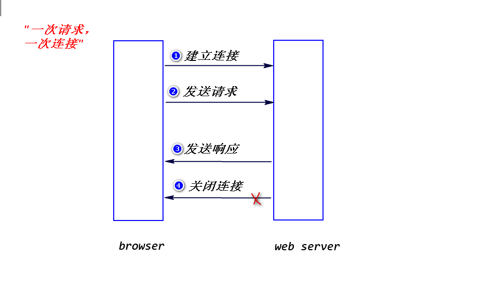

是一种网络应用层协议，规定了浏览器与web服务器之间如何通信以及 相应的数据包的结构。
a. tcp/ip协议：属于传递层和网络层协议，保证数据可靠的传递。
http协议属于应用层协议，需要依赖tcp/ip协议来传递数据包。
b.浏览器与web服务器之间如何通信:
step1.建立连接
step2.发送请求
step3.发送响应
step4.关闭连接
c.特点:
"一次请求，一次连接"
这样做的好处是,服务器可以利用有限的连接为尽可能多的请求服务。

1)请求数据包
a.请求行: (请求方式 请求资源路径 协议和版本)
b.若干消息头:
消息头是一些键值对(使用": "分隔),浏览器与web服务器之间
可以通过消息头来传递一些特定的信息。比如，浏览器可以通过
发送"user-agent"消息头，告诉服务器浏览器的类型和版本。
c.实体内容:
只有当请求方式为post时，实体内容才会有数据。
请求方式为get时，实体内容为空。
2)响应数据包
a.状态行 (协议和版本 状态码 状态描述)
200: 正常
500: 系统出错
404: 依据请求路径找不到对应的资源
b.若干消息头
服务器也可以发送一些消息头给浏览器，比如，可以发送
"content-type"消息头，告诉浏览器，服务器返回的数据类型。
c.实体内容
程序的处理结果，浏览器会解析出来，生成相应的页面。
1)get请求
a.哪一些情况浏览器会发送get请求?
在浏览器地址栏直接输入某个地址
点击链接
表单默认的提交方式
b.特点
会将请求参数添加到请求资源路径的后面，只能提交少量的数据给
服务器。
注：请求行只能存放大约2k左右的数据。
会将请求参数显示在浏览器地址栏，不安全。
注：有些网络设备，比如路由器就会记录包含了请求参数的
请求地址。
2)post请求
a.哪一些情况下，浏览器会发送post请求?
将表单的method属性设置为"post"。
b.特点
会将请求参数添加到实体内容里面，可以提交大量的数据给服务器。
不会将请求参数显示在浏览器地址栏，相对安全。
注：
http协议并不会对数据加密，所以，对于敏感数据
需要进行加密处理(需要使用https协议)
out.println方法默认会使用"iso-8859-1"来编码(不支持中文)。
response.setContentType("text/html;charset=utf-8");
(1)String request.getParameter(String paramName);
注：
a.如果请求参数名写错，获得null值。
b.表单提交时，如果不填写任何数据，会获得""。
(2)String[] request.getParameterValues(String paramName);
注：
a.当有多个请求参数名相同时，使用此方法。
?interest=cooking&interest=fishing
b.对于多选框和单选框，如果一个都不选，会获得null值。
当提交表单时，浏览器会按照打开该表单所在的页面时的字符集来 对中文参数值进行编码。比如，使用utf-8来编码，而服务器端默认 会使用iso-8859-1来解码。所以，会产生乱码。
可以修改服务器端的配置。

request.setCharacterEncoding(String charset);